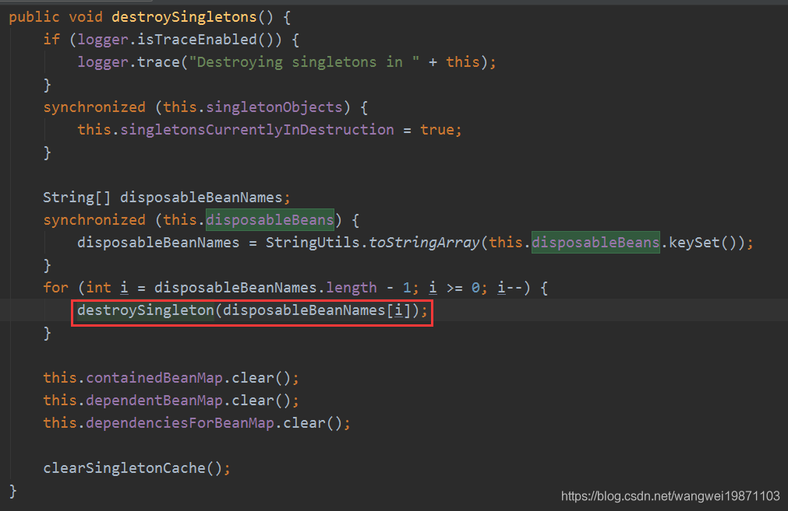
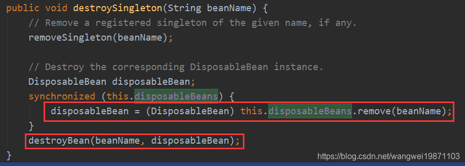
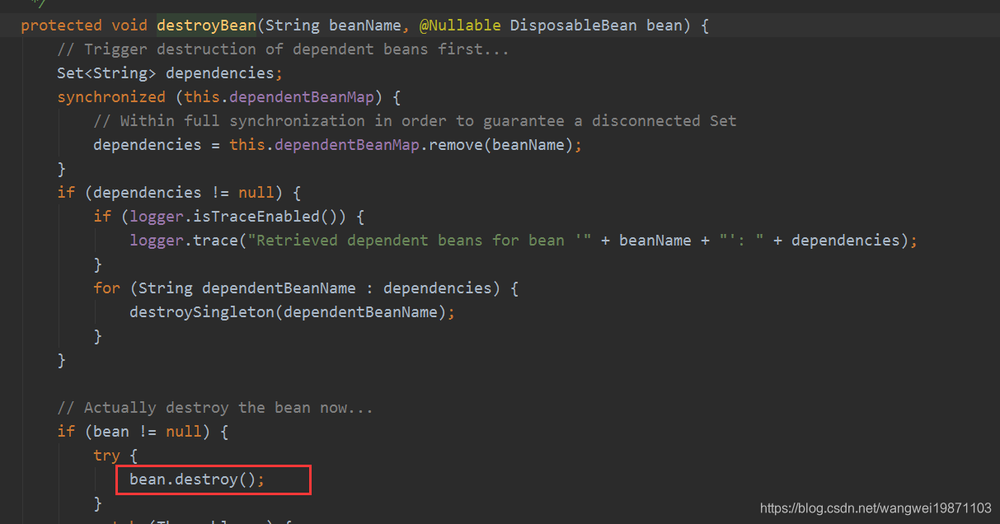
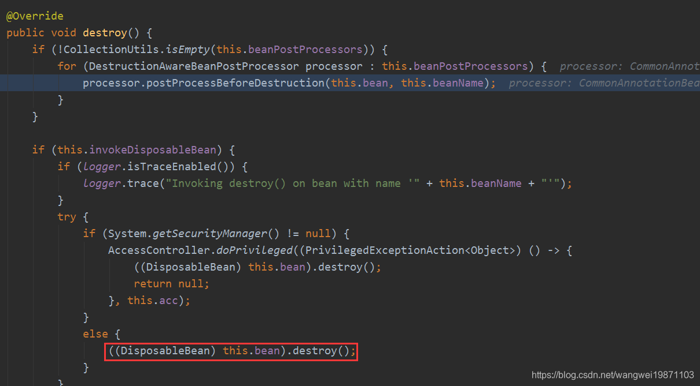

x1protected Object doCreateBean(final String beanName, final RootBeanDefinition mbd, final Object[] args)2 throws BeanCreationException {3 ...4 5 //处理器修改合并bean定义6 synchronized (mbd.postProcessingLock) {7 if (!mbd.postProcessed) {8 try {9 // ---看第二步---10 // 实例化完成进行处理器的处理11 applyMergedBeanDefinitionPostProcessors(mbd, beanType, beanName);12 // ---end---13 }14 catch (Throwable ex) {15 ...16 }17 mbd.postProcessed = true;18 }19 }20 21 //暴露早期的单例，处理循环引用22 boolean earlySingletonExposure = (mbd.isSingleton() && this.allowCircularReferences &&23 isSingletonCurrentlyInCreation(beanName));24 if (earlySingletonExposure) {25 ...26 //添加一个单例工厂方法27 addSingletonFactory(beanName, () -> getEarlyBeanReference(beanName, mbd, bean));28 }29 30 //填充属性31 // Initialize the bean instance.32 Object exposedObject = bean;33 try {34 // ---看第三步---35 // 填充属性36 populateBean(beanName, mbd, instanceWrapper);37 // ---end---38 39 // ---看第四步---40 exposedObject = initializeBean(beanName, exposedObject, mbd);41 // ---end---42 }43 catch (Throwable ex) {44 ...45 }46
47 if (earlySingletonExposure) {48 Object earlySingletonReference = getSingleton(beanName, false);49 if (earlySingletonReference != null) {50 if (exposedObject == bean) {51 exposedObject = earlySingletonReference;52 }53 else if (!this.allowRawInjectionDespiteWrapping && hasDependentBean(beanName)) {54 String[] dependentBeans = getDependentBeans(beanName);55 Set<String> actualDependentBeans = new LinkedHashSet<>(dependentBeans.length);56 for (String dependentBean : dependentBeans) {57 if (!removeSingletonIfCreatedForTypeCheckOnly(dependentBean)) {58 actualDependentBeans.add(dependentBean);59 }60 }61 if (!actualDependentBeans.isEmpty()) {62 throw new BeanCurrentlyInCreationException...63 }64 }65 }66 }67
68 // Register bean as disposable.69 try {70 71 // ---看第五步---72 //注册可销毁的bean73 registerDisposableBeanIfNecessary(beanName, bean, mbd);74 // ---end---75 }76 catch (BeanDefinitionValidationException ex) {77 ...78 }79 return exposedObject;80} 前面实例化完成了，之后要进行处理器的处理，也就是MergedBeanDefinitionPostProcessor处理器的处理：
101protected void applyMergedBeanDefinitionPostProcessors(RootBeanDefinition mbd, Class<?> beanType, String beanName) {2 for (BeanPostProcessor bp : getBeanPostProcessors()) {3 if (bp instanceof MergedBeanDefinitionPostProcessor) {4 MergedBeanDefinitionPostProcessor bdp = (MergedBeanDefinitionPostProcessor) bp;5 // ---看2-1步---6 bdp.postProcessMergedBeanDefinition(mbd, beanType, beanName);7 //---end---8 }9 }10}CommonAnnotationBeanPostProcessor的postProcessMergedBeanDefinition处理
141public void postProcessMergedBeanDefinition(RootBeanDefinition beanDefinition, Class<?> beanType, String beanName) {3 // ---看2-2步---4 super.postProcessMergedBeanDefinition(beanDefinition, beanType, beanName);5 // ---end---6 7 // ---看2-3步---8 InjectionMetadata metadata = findResourceMetadata(beanName, beanType, null);9 // ---end---10 11 // ---看2-4步---12 metadata.checkConfigMembers(beanDefinition);13 // ---end---14} 这个主要是生命周期的一些回调函数的注册，比如PostConstruct和PreDestroy注解的方法。
121public void postProcessMergedBeanDefinition(RootBeanDefinition beanDefinition, Class<?> beanType, String beanName) {3 // ---看2-2.1步---4 //找到生命周期方法5 LifecycleMetadata metadata = findLifecycleMetadata(beanType);6 // ---end---7 8 // ---看2-2.2步---9 //注册初始化和销毁的回调方法10 metadata.checkConfigMembers(beanDefinition);11 // ---end---12}findLifecycleMetadata寻找生命周期元数据。
281private LifecycleMetadata findLifecycleMetadata(Class<?> clazz) {2 if (this.lifecycleMetadataCache == null) {3 4 // ---看2-2.1.1步---5 // Happens after deserialization, during destruction...6 return buildLifecycleMetadata(clazz);7 // ---end---8 }9 10 //双重检测，尽可能少的用锁11 // Quick check on the concurrent map first, with minimal locking.12 LifecycleMetadata metadata = this.lifecycleMetadataCache.get(clazz);13 if (metadata == null) {14 synchronized (this.lifecycleMetadataCache) {15 metadata = this.lifecycleMetadataCache.get(clazz);16 if (metadata == null) {17 // ---看2-2.1.1步---18 metadata = buildLifecycleMetadata(clazz);19 // ---end---20 21 //放入缓存22 this.lifecycleMetadataCache.put(clazz, metadata);23 }24 return metadata;25 }26 }27 return metadata;28 } 构建生命周期元数据，一般来说都是要经过这步的，因为都需要经过注册，除非是第二次来，有缓存了。
其实就是检测clazz以及父类的所有的方法，看是不是有PostConstruct和PreDestroy注解，有的话就把方法封装成LifecycleElement加入对应的集合：
381private LifecycleMetadata buildLifecycleMetadata(final Class<?> clazz) {2 if (!AnnotationUtils.isCandidateClass(clazz, Arrays.asList(this.initAnnotationType, this.destroyAnnotationType))) {3 return this.emptyLifecycleMetadata;4 }5
6 List<LifecycleElement> initMethods = new ArrayList<>();7 List<LifecycleElement> destroyMethods = new ArrayList<>();8 Class<?> targetClass = clazz;9
10 do {11 final List<LifecycleElement> currInitMethods = new ArrayList<>();12 final List<LifecycleElement> currDestroyMethods = new ArrayList<>();13 //如果有PostConstruct和PreDestroy注解的方法就添加到currInitMethods和currDestroyMethods里，包括父类，因为可能CGLIB动态代理14 ReflectionUtils.doWithLocalMethods(targetClass, method -> {15 if (this.initAnnotationType != null && method.isAnnotationPresent(this.initAnnotationType)) {16 LifecycleElement element = new LifecycleElement(method);17 currInitMethods.add(element);18 if (logger.isTraceEnabled()) {19 logger.trace("Found init method on class [" + clazz.getName() + "]: " + method);20 }21 }22 if (this.destroyAnnotationType != null && method.isAnnotationPresent(this.destroyAnnotationType)) {23 currDestroyMethods.add(new LifecycleElement(method));24 if (logger.isTraceEnabled()) {25 logger.trace("Found destroy method on class [" + clazz.getName() + "]: " + method);26 }27 }28 });29 //加入相应的声明周期方法里30 initMethods.addAll(0, currInitMethods);31 destroyMethods.addAll(currDestroyMethods);32 targetClass = targetClass.getSuperclass();33 }34 while (targetClass != null && targetClass != Object.class);35 //有一个不为空就封装一个LifecycleMetadata返回，否则就返回空的emptyLifecycleMetadata36 return (initMethods.isEmpty() && destroyMethods.isEmpty() ? this.emptyLifecycleMetadata :37 new LifecycleMetadata(clazz, initMethods, destroyMethods));38} emptyLifecycleMetadata属性说明：如果没有注解的话会返回一个空的emptyLifecycleMetadata 。
161private final transient LifecycleMetadata emptyLifecycleMetadata =2 new LifecycleMetadata(Object.class, Collections.emptyList(), Collections.emptyList()) {3 4 public void checkConfigMembers(RootBeanDefinition beanDefinition) {5 }6 7 public void invokeInitMethods(Object target, String beanName) {8 }9 10 public void invokeDestroyMethods(Object target, String beanName) {11 }12 13 public boolean hasDestroyMethods() {14 return false;15 }16 }; 跟上面一样的结构，主要是解析Resource注解啦。
231private InjectionMetadata findResourceMetadata(String beanName, final Class<?> clazz, PropertyValues pvs) {2 // Fall back to class name as cache key, for backwards compatibility with custom callers.3 String cacheKey = (StringUtils.hasLength(beanName) ? beanName : clazz.getName());4 // Quick check on the concurrent map first, with minimal locking.5 InjectionMetadata metadata = this.injectionMetadataCache.get(cacheKey);6 if (InjectionMetadata.needsRefresh(metadata, clazz)) {7 synchronized (this.injectionMetadataCache) {8 metadata = this.injectionMetadataCache.get(cacheKey);9 if (InjectionMetadata.needsRefresh(metadata, clazz)) {10 if (metadata != null) {11 metadata.clear(pvs);12 }13 14 // ---看2-2.3.1步---15 //创建Resource注解注入元数据16 metadata = buildResourceMetadata(clazz);17 // ---end---18 this.injectionMetadataCache.put(cacheKey, metadata);19 }20 }21 }22 return metadata;23} buildResourceMetadata构建Resource元数据，别看好像那么长，其实跟前面差不多，这次是会看是否有webService，ejb，Resource的属性注解和方法注解，有的话也封装成注入元数据InjectionMetadata返回。
831 private InjectionMetadata buildResourceMetadata(final Class<?> clazz) {2 if (!AnnotationUtils.isCandidateClass(clazz, resourceAnnotationTypes)) {3 return InjectionMetadata.EMPTY;4 }5 6 List<InjectionMetadata.InjectedElement> elements = new ArrayList<>();7 Class<?> targetClass = clazz;8 9 do {10 final List<InjectionMetadata.InjectedElement> currElements = new ArrayList<>();11 //查询是否有webService，ejb，Resource的属性注解，但是不支持静态属性12 ReflectionUtils.doWithLocalFields(targetClass, field -> {13 if (webServiceRefClass != null && field.isAnnotationPresent(webServiceRefClass)) {14 if (Modifier.isStatic(field.getModifiers())) {15 throw new IllegalStateException("@WebServiceRef annotation is not supported on static fields");16 }17 currElements.add(new WebServiceRefElement(field, field, null));18 }19 else if (ejbRefClass != null && field.isAnnotationPresent(ejbRefClass)) {20 if (Modifier.isStatic(field.getModifiers())) {21 throw new IllegalStateException("@EJB annotation is not supported on static fields");22 }23 currElements.add(new EjbRefElement(field, field, null));24 }25 else if (field.isAnnotationPresent(Resource.class)) {26 if (Modifier.isStatic(field.getModifiers())) {27 throw new IllegalStateException("@Resource annotation is not supported on static fields");28 }29 if (!this.ignoredResourceTypes.contains(field.getType().getName())) {30 currElements.add(new ResourceElement(field, field, null));31 }32 }33 });34 //处理方法，桥接方法可以理解为解决老版本的类型转换问题，这里你就理解成就是普通方法35 ReflectionUtils.doWithLocalMethods(targetClass, method -> {36 Method bridgedMethod = BridgeMethodResolver.findBridgedMethod(method);37 if (!BridgeMethodResolver.isVisibilityBridgeMethodPair(method, bridgedMethod)) {38 return;39 }40 if (method.equals(ClassUtils.getMostSpecificMethod(method, clazz))) {41 if (webServiceRefClass != null && bridgedMethod.isAnnotationPresent(webServiceRefClass)) {42 if (Modifier.isStatic(method.getModifiers())) {43 throw new IllegalStateException("@WebServiceRef annotation is not supported on static methods");44 }45 if (method.getParameterCount() != 1) {46 throw new IllegalStateException("@WebServiceRef annotation requires a single-arg method: " + method);47 }48 PropertyDescriptor pd = BeanUtils.findPropertyForMethod(bridgedMethod, clazz);49 currElements.add(new WebServiceRefElement(method, bridgedMethod, pd));50 }51 else if (ejbRefClass != null && bridgedMethod.isAnnotationPresent(ejbRefClass)) {52 if (Modifier.isStatic(method.getModifiers())) {53 throw new IllegalStateException("@EJB annotation is not supported on static methods");54 }55 if (method.getParameterCount() != 1) {56 throw new IllegalStateException("@EJB annotation requires a single-arg method: " + method);57 }58 PropertyDescriptor pd = BeanUtils.findPropertyForMethod(bridgedMethod, clazz);59 currElements.add(new EjbRefElement(method, bridgedMethod, pd));60 }61 else if (bridgedMethod.isAnnotationPresent(Resource.class)) {62 if (Modifier.isStatic(method.getModifiers())) {//静态不行63 throw new IllegalStateException("@Resource annotation is not supported on static methods");64 }65 Class<?>[] paramTypes = method.getParameterTypes();66 if (paramTypes.length != 1) {//需要有一个参数67 throw new IllegalStateException("@Resource annotation requires a single-arg method: " + method);68 }69 if (!this.ignoredResourceTypes.contains(paramTypes[0].getName())) {70 PropertyDescriptor pd = BeanUtils.findPropertyForMethod(bridgedMethod, clazz);71 currElements.add(new ResourceElement(method, bridgedMethod, pd));72 }73 }74 }75 });76 77 elements.addAll(0, currElements);78 targetClass = targetClass.getSuperclass();79 }80 while (targetClass != null && targetClass != Object.class);81 82 return InjectionMetadata.forElements(elements, clazz);83 } 这个也是一样，把元素注册进beanDefinition里。
141public void checkConfigMembers(RootBeanDefinition beanDefinition) {2 Set<InjectedElement> checkedElements = new LinkedHashSet<>(this.injectedElements.size());3 for (InjectedElement element : this.injectedElements) {4 Member member = element.getMember();5 if (!beanDefinition.isExternallyManagedConfigMember(member)) {6 beanDefinition.registerExternallyManagedConfigMember(member);7 checkedElements.add(element);8 if (logger.isTraceEnabled()) {9 logger.trace("Registered injected element on class [" + this.targetClass.getName() + "]: " + element);10 }11 }12 }13 this.checkedElements = checkedElements;14 }填充属性，分为三个阶段：
第一阶段：在填充属性前，还会给InstantiationAwareBeanPostProcessor的处理器处理，给他们机会让他们去修改bean实例，这里也是扩展点。如果处理postProcessAfterInstantiation方法会发false，那就会停止属性填充，跳出循环并返回，说明可以控制是否要进行填充，但是spring内部的处理器不会有处理，要处理还是要自定义去扩展处理器。
第二阶段：获取自动装配模式，默认是NO，如果有设置了，就会根据设置来进行装配。
第三阶段：这里会进行InstantiationAwareBeanPostProcessor处理器的postProcessProperties处理：
ConfigurationClassPostProcessor内部类ImportAwareBeanPostProcessor处理（postProcessProperties）：@Configuration注解，会进行动态代理。
注入CommonAnnotationBeanPostProcessor处理（postProcessProperties方法）@Resource注解， 看下3-1步骤。
注入AutowiredAnnotationBeanPostProcessor处理（postProcessProperties方法），处理@Autowired注解，看3-2步骤。
961protected void populateBean(String beanName, RootBeanDefinition mbd, BeanWrapper bw) {2 if (bw == null) {3 if (mbd.hasPropertyValues()) {4 throw new BeanCreationException(5 mbd.getResourceDescription(), beanName, "Cannot apply property values to null instance");6 }7 else {8 // Skip property population phase for null instance.9 return;10 }11 }12
13 // ---第一阶段---14 //是否让InstantiationAwareBeanPostProcessor继续执行15 // Give any InstantiationAwareBeanPostProcessors the opportunity to modify the16 // state of the bean before properties are set. This can be used, for example,17 // to support styles of field injection.18 boolean continueWithPropertyPopulation = true;19
20 // 在填充前还可以用InstantiationAwareBeanPostProcessors来修改bean21 if (!mbd.isSynthetic() && hasInstantiationAwareBeanPostProcessors()) {22 23 //非合成的24 for (BeanPostProcessor bp : getBeanPostProcessors()) {25 if (bp instanceof InstantiationAwareBeanPostProcessor) {26 InstantiationAwareBeanPostProcessor ibp = (InstantiationAwareBeanPostProcessor) bp;27 if (!ibp.postProcessAfterInstantiation(bw.getWrappedInstance(), beanName)) {28 continueWithPropertyPopulation = false;29 break;30 }31 }32 }33 }34
35 if (!continueWithPropertyPopulation) {36 return;37 }38 // ---第一阶段end---39
40 // ---第二阶段---41 // 获取属性值42 PropertyValues pvs = (mbd.hasPropertyValues() ? mbd.getPropertyValues() : null);43
44 if (mbd.getResolvedAutowireMode() == AUTOWIRE_BY_NAME || mbd.getResolvedAutowireMode() == AUTOWIRE_BY_TYPE) {45 MutablePropertyValues newPvs = new MutablePropertyValues(pvs);46 // Add property values based on autowire by name if applicable.47 if (mbd.getResolvedAutowireMode() == AUTOWIRE_BY_NAME) {48 autowireByName(beanName, mbd, bw, newPvs);49 }50 // Add property values based on autowire by type if applicable.51 if (mbd.getResolvedAutowireMode() == AUTOWIRE_BY_TYPE) {52 autowireByType(beanName, mbd, bw, newPvs);53 }54 pvs = newPvs;55 }56 // ---第二阶段end---57
58 // ---第三阶段---59 boolean hasInstAwareBpps = hasInstantiationAwareBeanPostProcessors();60 boolean needsDepCheck = (mbd.getDependencyCheck() != AbstractBeanDefinition.DEPENDENCY_CHECK_NONE);61
62 PropertyDescriptor[] filteredPds = null;63 if (hasInstAwareBpps) {64 if (pvs == null) {65 pvs = mbd.getPropertyValues();66 }67 for (BeanPostProcessor bp : getBeanPostProcessors()) {68 if (bp instanceof InstantiationAwareBeanPostProcessor) {69 InstantiationAwareBeanPostProcessor ibp = (InstantiationAwareBeanPostProcessor) bp;70 PropertyValues pvsToUse = ibp.postProcessProperties(pvs, bw.getWrappedInstance(), beanName);71 if (pvsToUse == null) {72 if (filteredPds == null) {73 filteredPds = filterPropertyDescriptorsForDependencyCheck(bw, mbd.allowCaching);74 }75 pvsToUse = ibp.postProcessPropertyValues(pvs, filteredPds, bw.getWrappedInstance(), beanName);76 if (pvsToUse == null) {77 return;78 }79 }80 pvs = pvsToUse;81 }82 }83 }84 // ---第三阶段end---85 86 if (needsDepCheck) {87 if (filteredPds == null) {88 filteredPds = filterPropertyDescriptorsForDependencyCheck(bw, mbd.allowCaching);89 }90 checkDependencies(beanName, mbd, filteredPds, pvs);91 }92
93 if (pvs != null) {94 applyPropertyValues(beanName, mbd, bw, pvs);95 }96} CommonAnnotationBeanPostProcessor的postProcessProperties，这里就处理我们前面applyMergedBeanDefinitionPostProcessors处理注入注解元数据。
131public PropertyValues postProcessProperties(PropertyValues pvs, Object bean, String beanName) {3 InjectionMetadata metadata = findResourceMetadata(beanName, bean.getClass(), pvs);4 try {5 // ---看3-1.1步---6 metadata.inject(bean, beanName, pvs);7 // ---end---8 }9 catch (Throwable ex) {10 throw new BeanCreationException(beanName, "Injection of resource dependencies failed", ex);11 }12 return pvs;13} 遍历前面注册的InjectedElement，然后进行注入。
131public void inject(Object target, String beanName, PropertyValues pvs) throws Throwable {2 Collection<InjectedElement> checkedElements = this.checkedElements;3 Collection<InjectedElement> elementsToIterate =4 (checkedElements != null ? checkedElements : this.injectedElements);5 if (!elementsToIterate.isEmpty()) {6 for (InjectedElement element : elementsToIterate) {7 if (logger.isTraceEnabled()) {8 logger.trace("Processing injected element of bean '" + beanName + "': " + element);9 }10 element.inject(target, beanName, pvs);11 }12 }13}进行属性或者方法注入，但是方法注入前会判断是否已经有设置值了，有设置就不会注入，直接返回了。
281protected void inject(Object target, String requestingBeanName, PropertyValues pvs)2 throws Throwable {3
4 if (this.isField) {//属性注入5 Field field = (Field) this.member;6 ReflectionUtils.makeAccessible(field);7 field.set(target, getResourceToInject(target, requestingBeanName));8 }9 else {10 // ---看3-1.2.1步---11 // 检查属性是否跳过12 if (checkPropertySkipping(pvs)) {13 // ---end---14 return;15 }16 try {17 //方法注入18 Method method = (Method) this.member;19 ReflectionUtils.makeAccessible(method);20 // ---看3-1.2.2步---21 method.invoke(target, getResourceToInject(target, requestingBeanName));22 // ---end---23 }24 catch (InvocationTargetException ex) {25 throw ex.getTargetException();26 }27 }28}判断是否要略过属性注入，如果是定义的时候给定值了就忽略。
281protected boolean checkPropertySkipping( PropertyValues pvs) {2 Boolean skip = this.skip;3 if (skip != null) {4 return skip;5 }6 if (pvs == null) {7 this.skip = false;8 return false;9 }10 synchronized (pvs) {11 skip = this.skip;12 if (skip != null) {13 return skip;14 }15 if (this.pd != null) {16 if (pvs.contains(this.pd.getName())) {17 // 给定了值了就忽略，直接返回18 this.skip = true;19 return true;20 }21 else if (pvs instanceof MutablePropertyValues) {//如果是可变的话，就注册到处理过的属性集合里22 ((MutablePropertyValues) pvs).registerProcessedProperty(this.pd.getName());23 }24 }25 this.skip = false;26 return false;27 }28 } getResourceToInject是关键的方法，其实是InjectedElement的抽象方法，子类有不同的实现类，比如ResourceElement，EjbRefElement，WebServiceRefElement，当然我们就关注ResourceElement啦，其他自己有兴趣可以看。
这个方法首先判断注释元数据有没有Lazy注解，也就是懒加载，有的话会创建一个代理类，内部是用AOP代理工厂做的，细节后面说，然后有个getTarget代理方法，可以在需要时候调用获取。如果不是就直接getResource。
71protected Object getResourceToInject(Object target, String requestingBeanName) {3 return (this.lazyLookup ? buildLazyResourceProxy(this, requestingBeanName) :4 // ---看3-1.2.3步---5 getResource(this, requestingBeanName));6 // ---end---7} 先判断jndi的注入，然后才调用autowireResource，我们一般就是autowireResource。
181protected Object getResource(LookupElement element, String requestingBeanName)2 throws NoSuchBeanDefinitionException {3
4 if (StringUtils.hasLength(element.mappedName)) {5 return this.jndiFactory.getBean(element.mappedName, element.lookupType);6 }7 if (this.alwaysUseJndiLookup) {8 return this.jndiFactory.getBean(element.name, element.lookupType);9 }10 if (this.resourceFactory == null) {11 throw new NoSuchBeanDefinitionException(element.lookupType,12 "No resource factory configured - specify the 'resourceFactory' property");13 }14 15 // ---看1.2.4步---16 return autowireResource(this.resourceFactory, element, requestingBeanName);17 // ---end---18 } autowireResource自动装配@Resource的对象，这里主要就是根据依赖描述进行工厂的解析，最后都是调用getBean(String name, Class<T> requiredType)方法，最后获取之后再注册到依赖映射里。其实这个有个resolveBeanByName，看起来好像是名字优先，其实也会获取类型的。
461protected Object autowireResource(BeanFactory factory, LookupElement element, String requestingBeanName)2 throws NoSuchBeanDefinitionException {3
4 //自动装配的对象5 Object resource;6 //自动装配的名字7 Set<String> autowiredBeanNames;8 //依赖的属性名9 String name = element.name;10
11 if (factory instanceof AutowireCapableBeanFactory) {12 AutowireCapableBeanFactory beanFactory = (AutowireCapableBeanFactory) factory;13 //创建依赖描述14 DependencyDescriptor descriptor = element.getDependencyDescriptor();15 //不包含依赖对象，或者依赖对象的bean定义，只能通过解析类型去处理16 if (this.fallbackToDefaultTypeMatch && element.isDefaultName && !factory.containsBean(name)) {17 autowiredBeanNames = new LinkedHashSet<>();18 resource = beanFactory.resolveDependency(descriptor, requestingBeanName, autowiredBeanNames, null);19 if (resource == null) {20 throw new NoSuchBeanDefinitionException(element.getLookupType(), "No resolvable resource object");21 }22 }23 else {24 //获取依赖对象，里面就是getBean25 resource = beanFactory.resolveBeanByName(name, descriptor);26 //装配好的bean名字27 autowiredBeanNames = Collections.singleton(name);28 }29 }30 else {31 resource = factory.getBean(name, element.lookupType);32 autowiredBeanNames = Collections.singleton(name);33 }34
35 if (factory instanceof ConfigurableBeanFactory) {36 ConfigurableBeanFactory beanFactory = (ConfigurableBeanFactory) factory;37 for (String autowiredBeanName : autowiredBeanNames) {38 if (requestingBeanName != null && beanFactory.containsBean(autowiredBeanName)) {39 //注册依赖关系40 beanFactory.registerDependentBean(autowiredBeanName, requestingBeanName);41 }42 }43 }44
45 return resource;46}处理逻辑和Common的差不多。
也会注入@Autoried的处理类，调用postProcessProperties方法：
451public PropertyValues postProcessProperties(PropertyValues pvs, Object bean, String beanName) {3 InjectionMetadata metadata = findAutowiringMetadata(beanName, bean.getClass(), pvs);4 try {5 metadata.inject(bean, beanName, pvs);6 }7 catch (BeanCreationException ex) {8 throw ex;9 }10 catch (Throwable ex) {11 throw new BeanCreationException(beanName, "Injection of autowired dependencies failed", ex);12 }13 return pvs;14}15 16//findAutowiredAnnotation 查找带有@Autowired注解的属性。17private MergedAnnotation<?> findAutowiredAnnotation(AccessibleObject ao) {19 MergedAnnotations annotations = MergedAnnotations.from(ao);20 for (Class<? extends Annotation> type : this.autowiredAnnotationTypes) {21 MergedAnnotation<?> annotation = annotations.get(type);22 if (annotation.isPresent()) {23 return annotation;24 }25 }26 return null;27}28
29// inject30public void inject(Object target, String beanName, PropertyValues pvs) throws Throwable {31 Collection<InjectedElement> checkedElements = this.checkedElements;32 Collection<InjectedElement> elementsToIterate =33 (checkedElements != null ? checkedElements : this.injectedElements);34 if (!elementsToIterate.isEmpty()) {35 for (InjectedElement element : elementsToIterate) {36 if (logger.isTraceEnabled()) {37 logger.trace("Processing injected element of bean '" + beanName + "': " + element);38 }39 40 // ---看3-2.1步---41 element.inject(target, beanName, pvs);42 // ---end---43 }44 }45} 如果有缓存依赖描述的话，会根据缓存的依赖描述来解析依赖对象，否则还是执行bean工厂的resolveDependency，但是这个时候会传入TypeConverter类型，解析出来之后如果是required的，就放入缓存，并注册依赖信息，如果自动装配的bean只有一个，创建ShortcutDependencyDescriptor，并放入缓存。
491protected void inject(Object bean, String beanName, PropertyValues pvs) throws Throwable {3 Field field = (Field) this.member;4 Object value;5 6 // 缓存存在从缓存中获取到值7 if (this.cached) {8 // ---看3-2.2步---9 value = resolvedCachedArgument(beanName, this.cachedFieldValue);10 // ---end---11 }12 else {13 DependencyDescriptor desc = new DependencyDescriptor(field, this.required);14 desc.setContainingClass(bean.getClass());15 Set<String> autowiredBeanNames = new LinkedHashSet<>(1);16 Assert.state(beanFactory != null, "No BeanFactory available");17 TypeConverter typeConverter = beanFactory.getTypeConverter();18 try {19 value = beanFactory.resolveDependency(desc, beanName, autowiredBeanNames, typeConverter);20 }21 catch (BeansException ex) {22 throw new UnsatisfiedDependencyException(null, beanName, new InjectionPoint(field), ex);23 }24 synchronized (this) {25 if (!this.cached) {26 if (value != null || this.required) {27 this.cachedFieldValue = desc;28 registerDependentBeans(beanName, autowiredBeanNames);29 if (autowiredBeanNames.size() == 1) {30 String autowiredBeanName = autowiredBeanNames.iterator().next();31 if (beanFactory.containsBean(autowiredBeanName) &&32 beanFactory.isTypeMatch(autowiredBeanName, field.getType())) {33 this.cachedFieldValue = new ShortcutDependencyDescriptor(34 desc, autowiredBeanName, field.getType());35 }36 }37 }38 else {39 this.cachedFieldValue = null;40 }41 this.cached = true;42 }43 }44 }45 if (value != null) {46 ReflectionUtils.makeAccessible(field);47 field.set(bean, value);48 }49}检查缓存是不是依赖描述类型的，是的话就取出相关数据，然后解析依赖。
111private Object resolvedCachedArgument( String beanName, Object cachedArgument) {3 if (cachedArgument instanceof DependencyDescriptor) {4 DependencyDescriptor descriptor = (DependencyDescriptor) cachedArgument;5 Assert.state(this.beanFactory != null, "No BeanFactory available");6 return this.beanFactory.resolveDependency(descriptor, beanName, null, null);7 }8 else {9 return cachedArgument;10 }11} 其实applyMergedBeanDefinitionPostProcessors主要做的事就是用处理器把属性和方法上的自动装配的信息记录下来，放到bean定义里，后面进行填充的时候可以用到，其中就包括CommonAnnotationBeanPostProcessor的生命周期方法和webService，ejb，Resource注解信息以及AutowiredAnnotationBeanPostProcessor的Autowired和Value注解信息。
前面讲了populateBean，给属性和方法注入bean，完成后，就要进行初始化调用了，其实就是各种处理器接口的处理。
451protected Object initializeBean(final String beanName, final Object bean, RootBeanDefinition mbd) {2 if (System.getSecurityManager() != null) {3 AccessController.doPrivileged((PrivilegedAction<Object>) () -> {4 invokeAwareMethods(beanName, bean);5 return null;6 }, getAccessControlContext());7 }8 9 else {10 // ---看4-1步---11 //Aware接口处理器12 invokeAwareMethods(beanName, bean);13 // ---end---14 }15
16 Object wrappedBean = bean;17 //初始化前18 if (mbd == null || !mbd.isSynthetic()) {19 20 // ---看4-2步---21 wrappedBean = applyBeanPostProcessorsBeforeInitialization(wrappedBean, beanName);22 // ---end---23 }24
25 try {26 // ---看4-3步---27 //初始化28 invokeInitMethods(beanName, wrappedBean, mbd);29 // ---end---30 }31 catch (Throwable ex) {32 throw new BeanCreationException(33 (mbd != null ? mbd.getResourceDescription() : null),34 beanName, "Invocation of init method failed", ex);35 }36 if (mbd == null || !mbd.isSynthetic()) {37 38 // ---看4-4步---39 //初始化后40 wrappedBean = applyBeanPostProcessorsAfterInitialization(wrappedBean, beanName);41 // ---end---42 }43
44 return wrappedBean;45} invokeAwareMethods触发提示方法，处理BeanNameAware，BeanClassLoaderAware，BeanFactoryAware接口方法，这里BeanFactoryAware的接口要注意，如果前面配置类有CGLIB动态代理的话，这里这个方法就重复了，也就是setBeanFactory被重复调用了两次，前面一次是在EnhancedConfiguration接口的方法。
191private void invokeAwareMethods(final String beanName, final Object bean) {2 if (bean instanceof Aware) {3 if (bean instanceof BeanNameAware) {4 //设置bean名字5 ((BeanNameAware) bean).setBeanName(beanName);6 }7 if (bean instanceof BeanClassLoaderAware) {8 ClassLoader bcl = getBeanClassLoader();9 if (bcl != null) {10 //设置类加载器11 ((BeanClassLoaderAware) bean).setBeanClassLoader(bcl);12 }13 }14 if (bean instanceof BeanFactoryAware) {15 //设置BeanFactory16 ((BeanFactoryAware) bean).setBeanFactory(AbstractAutowireCapableBeanFactory.this);17 }18 }19} applyBeanPostProcessorsBeforeInitialization初始化之前处理，所有BeanPostProcessor 处理，如果有返回null了就直接返回，否则就把处理后的对象替换原来的，返回最新对象。
ApplicationContextAwareProcessor：上下文通知。
ImportAwareBeanPostProcessor：导入通知处理器。
InitDestroyAnnotationBeanPostProcessor：初始化销毁注解Bean通知。
141public Object applyBeanPostProcessorsBeforeInitialization(Object existingBean, String beanName)3 throws BeansException {4
5 Object result = existingBean;6 for (BeanPostProcessor processor : getBeanPostProcessors()) {7 Object current = processor.postProcessBeforeInitialization(result, beanName);8 if (current == null) {9 return result;10 }11 result = current;12 }13 return result;14} ApplicationContextAwareProcessor的postProcessBeforeInitialization，如果发现bean有实现那一堆接口任意一个的话，就会执行invokeAwareInterfaces方法。
291public Object postProcessBeforeInitialization(Object bean, String beanName) throws BeansException {4 if (!(bean instanceof EnvironmentAware || bean instanceof EmbeddedValueResolverAware ||5 bean instanceof ResourceLoaderAware || bean instanceof ApplicationEventPublisherAware ||6 bean instanceof MessageSourceAware || bean instanceof ApplicationContextAware)){7 return bean;8 }9
10 AccessControlContext acc = null;11
12 if (System.getSecurityManager() != null) {13 acc = this.applicationContext.getBeanFactory().getAccessControlContext();14 }15
16 if (acc != null) {17 AccessController.doPrivileged((PrivilegedAction<Object>) () -> {18 invokeAwareInterfaces(bean);19 return null;20 }, acc);21 }22 else {23 // ---看4-2.1.1步---24 invokeAwareInterfaces(bean);25 // ---end---26 }27
28 return bean;29}其实就是设置一些值，方便外部获取，做一些扩展。
201private void invokeAwareInterfaces(Object bean) {2 if (bean instanceof EnvironmentAware) {3 ((EnvironmentAware) bean).setEnvironment(this.applicationContext.getEnvironment());4 }5 if (bean instanceof EmbeddedValueResolverAware) {6 ((EmbeddedValueResolverAware) bean).setEmbeddedValueResolver(this.embeddedValueResolver);7 }8 if (bean instanceof ResourceLoaderAware) {9 ((ResourceLoaderAware) bean).setResourceLoader(this.applicationContext);10 }11 if (bean instanceof ApplicationEventPublisherAware) {12 ((ApplicationEventPublisherAware) bean).setApplicationEventPublisher(this.applicationContext);13 }14 if (bean instanceof MessageSourceAware) {15 ((MessageSourceAware) bean).setMessageSource(this.applicationContext);16 }17 if (bean instanceof ApplicationContextAware) {18 ((ApplicationContextAware) bean).setApplicationContext(this.applicationContext);19 }20} ConfigurationClassPostProcessor内部类ImportAwareBeanPostProcessor的postProcessBeforeInitialization，如果是ImportAware类型的，就会设置bean的注解信息。
111public Object postProcessBeforeInitialization(Object bean, String beanName) {3 if (bean instanceof ImportAware) {4 ImportRegistry ir = this.beanFactory.getBean(IMPORT_REGISTRY_BEAN_NAME, ImportRegistry.class);5 AnnotationMetadata importingClass = ir.getImportingClassFor(ClassUtils.getUserClass(bean).getName());6 if (importingClass != null) {7 ((ImportAware) bean).setImportMetadata(importingClass);8 }9 }10 return bean;11}InitDestroyAnnotationBeanPostProcessor的postProcessBeforeInitialization，这里就是我们前面注册的生命周期元数据，这个时候要进行调用了。
161public Object postProcessBeforeInitialization(Object bean, String beanName) throws BeansException {3 LifecycleMetadata metadata = findLifecycleMetadata(bean.getClass());4 try {5 // ---看4-2.3.1步---6 metadata.invokeInitMethods(bean, beanName);7 // ---end---8 }9 catch (InvocationTargetException ex) {10 throw new BeanCreationException(beanName, "Invocation of init method failed", ex.getTargetException());11 }12 catch (Throwable ex) {13 throw new BeanCreationException(beanName, "Failed to invoke init method", ex);14 }15 return bean;16} LifecycleMetadata 的invokeInitMethods，调用前面注册的初始化方法集合checkedInitMethods的每一个方法。
201public void invokeInitMethods(Object target, String beanName) throws Throwable {2 Collection<LifecycleElement> checkedInitMethods = this.checkedInitMethods;3 Collection<LifecycleElement> initMethodsToIterate =4 (checkedInitMethods != null ? checkedInitMethods : this.initMethods);5 if (!initMethodsToIterate.isEmpty()) {6 for (LifecycleElement element : initMethodsToIterate) {7 if (logger.isTraceEnabled()) {8 logger.trace("Invoking init method on bean '" + beanName + "': " + element.getMethod());9 }10 // 运行方法11 element.invoke(target);12 }13 }14 }15
16// invoke方法 反射调用方法17public void invoke(Object target) throws Throwable {18 ReflectionUtils.makeAccessible(this.method);19 this.method.invoke(target, (Object[]) null);20} 这个方法就是我们如果实现了InitializingBean接口的话，就可能要调用afterPropertiesSet方法，其实就是个回调，告诉你属性设置好了。当然后面也有自定义的初始化方法invokeCustomInitMethod。
381protected void invokeInitMethods(String beanName, final Object bean, RootBeanDefinition mbd)2 throws Throwable {3 4 //实现InitializingBean接口的5 boolean isInitializingBean = (bean instanceof InitializingBean);6 if (isInitializingBean && (mbd == null || !mbd.isExternallyManagedInitMethod("afterPropertiesSet"))) {7 if (logger.isTraceEnabled()) {8 logger.trace("Invoking afterPropertiesSet() on bean with name '" + beanName + "'");9 }10 if (System.getSecurityManager() != null) {11 try {12 AccessController.doPrivileged((PrivilegedExceptionAction<Object>) () -> {13 ((InitializingBean) bean).afterPropertiesSet();14 return null;15 }, getAccessControlContext());16 }17 catch (PrivilegedActionException pae) {18 throw pae.getException();19 }20 }21 else {22 ((InitializingBean) bean).afterPropertiesSet();23 }24 }25 26 //初始化方法，比如xml配置的27 if (mbd != null && bean.getClass() != NullBean.class) {28 String initMethodName = mbd.getInitMethodName();29 if (StringUtils.hasLength(initMethodName) &&30 !(isInitializingBean && "afterPropertiesSet".equals(initMethodName)) &&31 !mbd.isExternallyManagedInitMethod(initMethodName)) {32 // ---看3-1步---33 // 运行自定义方法34 invokeCustomInitMethod(beanName, bean, mbd);35 // ---end---36 }37 }38 } invokeCustomInitMethod自定义的初始方法，获取bean的自定义初始化方法，如果自身或者父类是接口类型的话，就反射出接口方法来，最后调用。
571protected void invokeCustomInitMethod(String beanName, final Object bean, RootBeanDefinition mbd)2 throws Throwable {3
4 String initMethodName = mbd.getInitMethodName();5 Assert.state(initMethodName != null, "No init method set");6 Method initMethod = (mbd.isNonPublicAccessAllowed() ?7 BeanUtils.findMethod(bean.getClass(), initMethodName) :8 ClassUtils.getMethodIfAvailable(bean.getClass(), initMethodName));9
10 if (initMethod == null) {11 if (mbd.isEnforceInitMethod()) {12 throw new BeanDefinitionValidationException("Could not find an init method named '" +13 initMethodName + "' on bean with name '" + beanName + "'");14 }15 else {16 if (logger.isTraceEnabled()) {17 logger.trace("No default init method named '" + initMethodName +18 "' found on bean with name '" + beanName + "'");19 }20 // Ignore non-existent default lifecycle methods.21 return;22 }23 }24
25 if (logger.isTraceEnabled()) {26 logger.trace("Invoking init method '" + initMethodName + "' on bean with name '" + beanName + "'");27 }28 29 // ---看4-3.1.1步---30 // 获取接口方法31 Method methodToInvoke = ClassUtils.getInterfaceMethodIfPossible(initMethod);32 // ---end---33
34 if (System.getSecurityManager() != null) {35 AccessController.doPrivileged((PrivilegedAction<Object>) () -> {36 ReflectionUtils.makeAccessible(methodToInvoke);37 return null;38 });39 try {40 AccessController.doPrivileged((PrivilegedExceptionAction<Object>) () ->41 methodToInvoke.invoke(bean), getAccessControlContext());42 }43 catch (PrivilegedActionException pae) {44 InvocationTargetException ex = (InvocationTargetException) pae.getException();45 throw ex.getTargetException();46 }47 }48 else {49 try {50 ReflectionUtils.makeAccessible(methodToInvoke);51 methodToInvoke.invoke(bean);52 }53 catch (InvocationTargetException ex) {54 throw ex.getTargetException();55 }56 }57}尝试从自身或者父类获取接口方法。
181public static Method getInterfaceMethodIfPossible(Method method) {2 if (Modifier.isPublic(method.getModifiers()) && !method.getDeclaringClass().isInterface()) {3 Class<?> current = method.getDeclaringClass();4 while (current != null && current != Object.class) {5 Class<?>[] ifcs = current.getInterfaces();6 for (Class<?> ifc : ifcs) {7 try {8 return ifc.getMethod(method.getName(), method.getParameterTypes());9 }10 catch (NoSuchMethodException ex) {11 // ignore12 }13 }14 current = current.getSuperclass();15 }16 }17 return method;18 }初始化之后处理，跟初始化之前处理的事情差不多。
BeanPostProcessorChecker：打印信息
ApplicationListenerDetector：自定义的单例类作为监听器添加到applicationEventMulticaster。
141public Object applyBeanPostProcessorsAfterInitialization(Object existingBean, String beanName)3 throws BeansException {4
5 Object result = existingBean;6 for (BeanPostProcessor processor : getBeanPostProcessors()) {7 Object current = processor.postProcessAfterInitialization(result, beanName);8 if (current == null) {9 return result;10 }11 result = current;12 }13 return result;14}PostProcessorRegistrationDelegate内部类BeanPostProcessorChecker的postProcessAfterInitialization，打印信息。
121 2 public Object postProcessAfterInitialization(Object bean, String beanName) {3 if (!(bean instanceof BeanPostProcessor) && !isInfrastructureBean(beanName) &&4 this.beanFactory.getBeanPostProcessorCount() < this.beanPostProcessorTargetCount) {5 if (logger.isInfoEnabled()) {6 logger.info("Bean '" + beanName + "' of type [" + bean.getClass().getName() +7 "] is not eligible for getting processed by all BeanPostProcessors " +8 "(for example: not eligible for auto-proxying)");9 }10 }11 return bean;12 } 将我们自定义的单例类作为监听器添加到applicationEventMulticaster里。
221public Object postProcessAfterInitialization(Object bean, String beanName) {3 if (bean instanceof ApplicationListener) {4 // potentially not detected as a listener by getBeanNamesForType retrieval5 Boolean flag = this.singletonNames.get(beanName);6 if (Boolean.TRUE.equals(flag)) {7 // singleton bean (top-level or inner): register on the fly8 this.applicationContext.addApplicationListener((ApplicationListener<?>) bean);9 }10 else if (Boolean.FALSE.equals(flag)) {11 if (logger.isWarnEnabled() && !this.applicationContext.containsBean(beanName)) {12 // inner bean with other scope - can't reliably process events13 logger.warn("Inner bean '" + beanName + "' implements ApplicationListener interface " +14 "but is not reachable for event multicasting by its containing ApplicationContext " +15 "because it does not have singleton scope. Only top-level listener beans are allowed " +16 "to be of non-singleton scope.");17 }18 this.singletonNames.remove(beanName);19 }20 }21 return bean;22}销毁回调，这里就数注册销毁回调方法，如果有的话。
321protected void registerDisposableBeanIfNecessary(String beanName, Object bean, RootBeanDefinition mbd) {2 AccessControlContext acc = (System.getSecurityManager() != null ? getAccessControlContext() : null);3 // ---看5-1步---4 //有销毁接口的5 if (!mbd.isPrototype() && requiresDestruction(bean, mbd)) {6 // ---end---7 8 //单例的情况，注册销毁回调9 if (mbd.isSingleton()) {10 11 // ---看5-2步---12 // Register a DisposableBean implementation that performs all destruction13 // work for the given bean: DestructionAwareBeanPostProcessors,14 // DisposableBean interface, custom destroy method.15 registerDisposableBean(beanName,16 new DisposableBeanAdapter(bean, beanName, mbd, getBeanPostProcessors(), acc));17 // ---看5-3步---18 19 }20 else {21 22 //自定义的，注册到Scope23 // A bean with a custom scope...24 Scope scope = this.scopes.get(mbd.getScope());25 if (scope == null) {26 throw new IllegalStateException("No Scope registered for scope name '" + mbd.getScope() + "'");27 }28 scope.registerDestructionCallback(beanName,29 new DisposableBeanAdapter(bean, beanName, mbd, getBeanPostProcessors(), acc));30 }31 }32} 检查是否是有销毁的方法注册的，有方法名都是可以的，或者有DestructionAwareBeanPostProcessor处理器来判断的。
61protected boolean requiresDestruction(Object bean, RootBeanDefinition mbd) {2 // ---看5-1.1步---3 return (bean.getClass() != NullBean.class && (DisposableBeanAdapter.hasDestroyMethod(bean, mbd) 4 // ---看5-1.2步---5 || (hasDestructionAwareBeanPostProcessors() && DisposableBeanAdapter.hasApplicableProcessors(bean, getBeanPostProcessors()))));6} 实现DisposableBean和AutoCloseable 接口的，或者INFER_METHOD等于destroyMethodName 且有close，shutdown方法名的。
111public static boolean hasDestroyMethod(Object bean, RootBeanDefinition beanDefinition) {2 if (bean instanceof DisposableBean || bean instanceof AutoCloseable) {3 return true;4 }5 String destroyMethodName = beanDefinition.getDestroyMethodName();6 if (AbstractBeanDefinition.INFER_METHOD.equals(destroyMethodName)) {7 return (ClassUtils.hasMethod(bean.getClass(), CLOSE_METHOD_NAME) ||8 ClassUtils.hasMethod(bean.getClass(), SHUTDOWN_METHOD_NAME));9 }10 return StringUtils.hasLength(destroyMethodName);11}如果有处理器来处理的话。
131public static boolean hasApplicableProcessors(Object bean, List<BeanPostProcessor> postProcessors) {2 if (!CollectionUtils.isEmpty(postProcessors)) {3 for (BeanPostProcessor processor : postProcessors) {4 if (processor instanceof DestructionAwareBeanPostProcessor) {5 DestructionAwareBeanPostProcessor dabpp = (DestructionAwareBeanPostProcessor) processor;6 if (dabpp.requiresDestruction(bean)) {7 return true;8 }9 }10 }11 }12 return false;13 } 其实就是把bean注册进去，到时候回调就行。
51public void registerDisposableBean(String beanName, DisposableBean bean) {2 synchronized (this.disposableBeans) {3 this.disposableBeans.put(beanName, bean);4 }5}最后容器销毁的时候会调用：


进行回调：

